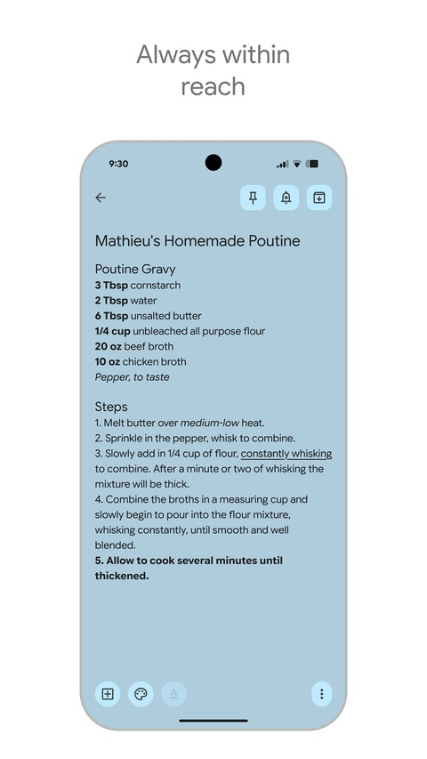

Google Keep 用了三年才发现的五个坑，每一个都差点让我丢数据
Google Keep 看着就是个随手记的便签应用，实则暗藏玄机。归档和删除怎么区分？OCR 什么时候才会生效？手机和电脑上为什么格式不一样？这篇把我踩过的实坑一个一个说清楚。
Google Keep 大概是我手机里装得最久的应用之一了，google keep官网的定位就是纯纯的轻量便签。当初是冲着"随手记"三个字装的——打开就写、写完就关，比任何笔记软件都省心。但就是这么一个看起来简单到没什么学习曲线的东西，我前前后后踩了好几个坑，有一次差点把半学期的会议纪要整批清掉。

这篇文章不是教你怎么入门 Google Keep，而是把我花了快三年才摸透的几个"反常识"的坑整理出来。如果你刚用不久，看完能省掉至少一次误删和好几次"怎么找不到了"的焦急。
第一个坑：把归档当成删除，把删除当成永久删除
这是我踩过最痛的一个。用了大半年之后我才搞清楚 Keep 里"归档"和"删除"的心智模型完全反过来想才对。
症状：我想清理主视图，把一堆写完的清单都"删除"了。过了几天突然需要其中一份购物清单的历史价格记录，翻遍主视图和归档都找不到，以为彻底没了，急得满头汗。
原因：Keep 的删除机制和绝大多数应用不一样。归档才是"收起来但永远在"，删除其实是"放到一个 7 天倒计时的临时储物间"。更诡异的是，你从回收站恢复一条笔记，它不会回到你原来的位置，而是直接扔进归档——我当时就是恢复了但没切去归档视图看，以为恢复失败又删了一次。
解法：
- 清理主视图只用归档，永远不用删除，除非你确定这条笔记这辈子不会再看
- 误删之后立刻去侧滑抽屉点回收站，找到之后还原，然后一定要切到归档视图再点一次取消归档
- 恢复操作在任何一台设备上做就行，所有设备同步生效
这个坑我身边至少有五个人踩过。Keep 把"删除"和"归档"都做成了从主视图消失的操作，而且图标长得还挺像，设计上真的有点反直觉。
第二个坑：手机端和电脑端的格式能力不是同一个东西
我一开始以为 Keep 全平台同步，格式也应该全平台一致。Keep 的官方下载在各平台应用商店都能直接找到，用起来没什么门槛，但跨平台之后才发现格式不是同一个东西。结果好几次在电脑上排好的标题和列表，到手机上一看就散架了。
症状：电脑上用 H1 和 H2 层级写了会议纪要，手机端打开全是加粗的普通文字，层级全没了；用富文本的圆点列表做了个清单，手机上没有复选框，没法打勾。

原因：Keep 的格式化在两端完全是两套实现。网页端 2025 年 Material 3 更新后有完整的富文本工具栏——加粗、斜体、下划线、删除线、H1/H2 标题、有序/无序列表，甚至有浮动工具栏。但手机端到现在只保留了加粗和斜体，没有下划线，没有标题层级，没有有序列表。
还有一个容易混淆的点：Keep 的"清单"是一个独立的笔记类型，不是富文本的列表格式。你在网页端用富文本工具栏插入的圆点列表，本质上就是文本里的圆点，没有复选框、不能勾选、不能自动折叠。要真正能打勾的清单，必须从创建笔记时就选"清单"类型。
解法：
- 手机上只做快速记录，排版、标题、层级都留到电脑上弄
- 需要打勾的任务清单，从一开始就用清单类型笔记，别事后再把富文本列表转成清单
- 跨设备分享的笔记，尽量只用加粗和斜体这两端都支持的格式
第三个坑：OCR 不是实时的，离线拍了白搭
Keep 对图片笔记自动跑 OCR 这件事我很早就知道——拍一张收据，几个月后搜"鸡蛋"能找回来，听起来很香。但有次我出差在信号很差的地方拍了一叠名片，回到家搜名字怎么都搜不到。
症状：图片笔记上传了，但搜里面的关键词找不到。手动点进图片提取文字，Keep 却说"没有可识别的文字"。
原因：Keep 的 OCR 是纯云端处理的。你在离线状态下拍的图片，只会先存到本地，等设备恢复联网之后才会同步到 Google 服务器，然后才跑 OCR。这个延迟可能是几分钟，也可能是好几个小时。而且如果图片超过 10MB，识别可能不完整甚至直接失败。
另外 OCR 的手写体识别波动很大——工整的手写大概有 85% 准确率，但草书和潦草字可能只有 50% 出头。中文艺术字和竖排文字也容易识别错方向。
解法：
- 重要的图片笔记上传之后，等联网过一会儿手动打开图片点"提取文字"，确认文字能抽出来再放心
- 拍照尽量清晰、光线充足、避免倾斜和倒置
- 离线拍的图片回到有网的地方主动打开一下那条笔记，触发同步
第四个坑：归档的笔记默认搜不到
我有一条笔记归档了半年，某天突然想起要搜它的内容，在搜索框里打了关键词，结果出来一堆主视图的笔记，归档的那条始终没出现。以为是 OCR 没收录或者数据丢了，后来去google keep文档翻了一下才弄明白。
症状：确定关键词在笔记里，搜索结果就是没有。切到归档视图手动翻，笔记好好在那里。
原因：Keep 默认不把归档笔记包含在搜索结果里。这个设计可能是为了减少干扰，但用起来特别像笔记丢了——你明明记得自己写过，就是搜不到。部分版本的 Keep 在搜索设置里有一个"包含归档"的开关，但不是所有版本都有。
解法：搜不到的时候，先切到归档视图，在归档视图里再搜一遍。养成这个习惯之后我再也没被"笔记丢失"吓过。
第五个坑：恢复的笔记不会自动回到原来的位置
这个坑和第一个坑有点关联，但值得单独提。上次我误删了一条置顶的项目进度笔记，从回收站恢复之后，在主视图翻来翻去找不到，以为恢复失败又删了一次。
症状：回收站里显示"已还原"，但主视图没看到那条笔记。
原因：Keep 恢复笔记的逻辑是把笔记放回归档视图，而不是恢复到它原来的位置。这是一个保护机制——刚恢复的笔记可能只是看看是不是误删，不想立刻出现在主视图。而且如果那条笔记之前是置顶的，恢复后自动取消置顶，你得手动重新置顶。
解法：恢复之后立刻切到归档视图，找到笔记点"取消归档"，如果之前置顶过记得再置顶一次。现在我恢复笔记的流程已经固定成四步：打开还原 → 切归档视图 → 取消归档 → 检查置顶。
防坑清单
写了这么多，最后把最关键的几条浓缩一下，以后翻看直接对着查：
- 清理主视图只用归档，永远不用删除——归档永久保留，删除只有 7 天
- 恢复 = 还原 + 取消归档，两步缺一不可；置顶笔记恢复后记得重新置顶
- 手机记、电脑排，两端格式能力不同；打勾任务必须用清单类型笔记
- OCR 需要联网，离线拍的图片回网后手动确认一下文字能抽出来
- 搜索不到别慌，切归档视图再搜一遍——Keep 默认不搜归档
我个人最深的体会是，Google Keep 这种工具类应用，最危险的不是功能太复杂，而是它看起来太简单了，让人以为没什么可注意的。知道这些坑之后，这软件其实相当省心，就是那种装了之后再也不会想换掉的应用。
上面这篇只是我个人的使用心得，Google Keep 的完整功能和最新用法可以参考我整理的中文文档，里面从基础操作到进阶技巧都有覆盖。如果你想自己动手试试，直接在 Google 商店就能找到官方下载。整套资料我同步在三个代码仓库里，GitHub、Gitee、GitCode 都能拿到，国内访问的体验会好一些——毕竟 Google 相关的服务在国内有时确实不太稳定，多几个镜像总没坏处。